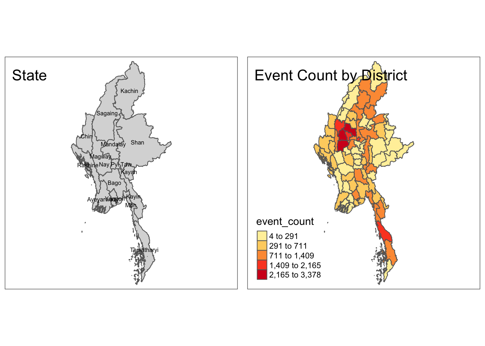

pacman::p_load(tmap, sf, raster, spatstat, maptools, sp, tidyverse, DT, gridExtra)Take-home Exercise 1
Take-home
In this exercise, We will be analyzing armed conflict data in Myanmar, using spatial point pattern analysis to understand the distribution and relationships between conflict events. We’ll also create maps to visualize the results and interpret the spatial patterns.
1. Introduction
1.1 Context
In 2024 armed conflict continues to be a devastating global issue, with millions of people affected each year. Recent years have seen a surge in conflicts, driven by factors such as political instability, regional tensions, and resource scarcity. Myanmar, in particular, has experienced significant armed conflict in recent years, including the 2021 military coup and subsequent violence.
TODO: Lit review
1.2 Objectives
- Analyze the spatial distribution of armed conflict events in Myanmar.
- Identify patterns and trends in the temporal distribution of conflict events.
- Explore the relationship between conflict events and geographic features (e.g., administrative boundaries, natural resources).
- Identify potential hotspots of conflict activity.
- Provide insights for policymakers and humanitarian organizations working to address the conflict in Myanmar.
2. Setup
2.1 Loading Packages
In this project we will be using the following packages:
tmap: A package for creating thematic maps in R. It provides a simple and flexible interface for customizing maps and exporting them in various formats.sf: A package for simple feature data, which is a modern standard for representing geographic features. It provides efficient data structures and functions for spatial operations.raster: A package for working with raster data, such as images and digital elevation models. It offers tools for reading, writing, manipulating, and analyzing raster data.spatstat: A package for spatial point pattern analysis. It provides functions for analyzing the distribution and relationships between points in a study area.maptools: A package for reading and writing various spatial data formats, including shapefiles and KML. It also provides tools for converting between different spatial data structures.sp: A package for spatial data in R. It provides classes and functions for representing and manipulating spatial data, such as points, lines, and polygons.tidyverse: A collection of R packages designed for data manipulation, visualization, and analysis. It includes packages like dplyr, ggplot2, and tidyr, which are commonly used in data science workflows.
2.2 Loading Data
The dataset used in this analysis is sourced from the Armed Conflict Location & Event Data (ACLED) database. It contains information on various types of armed conflict events, including Battles, Explosion/Remote violence, Strategic developments, Protest, Riots, and Violence against civilians. The data covers the period from January 2021 to June 2024 and provides specific details such as event date, location coordinates, actor information, and more.
# Read CSV files
acled_2021_23 <- read_csv("data/aspatial/2021-2023-Myanmar.csv")
acled_2024 <- read_csv("data/aspatial/2024-Myanmar.csv")Next we load Myanmar Boundary from Humanitarian Data Exchange - Get demographics - Get town center
# Read Myanmar Boundary
mym_sf <- st_read(dsn = "data/geospatial",
layer = "mmr_polbnda_adm2_250k_mimu") %>%
st_transform(crs = 32647)Reading layer `mmr_polbnda_adm2_250k_mimu' from data source
`/Users/jeffery/Projects/Y4S1/IS415/S0methingSimple/IS415-GAA/take-home_ex/ex01/data/geospatial'
using driver `ESRI Shapefile'
Simple feature collection with 80 features and 7 fields
Geometry type: MULTIPOLYGON
Dimension: XY
Bounding box: xmin: 92.1721 ymin: 9.696844 xmax: 101.17 ymax: 28.54554
Geodetic CRS: WGS 84mym_st_sf <- st_read(dsn = "data/geospatial",
layer = "mmr_polbnda_adm1_250k_mimu_1") %>%
st_transform(crs = 32647)Reading layer `mmr_polbnda_adm1_250k_mimu_1' from data source
`/Users/jeffery/Projects/Y4S1/IS415/S0methingSimple/IS415-GAA/take-home_ex/ex01/data/geospatial'
using driver `ESRI Shapefile'
Simple feature collection with 15 features and 6 fields
Geometry type: MULTIPOLYGON
Dimension: XY
Bounding box: xmin: 92.1721 ymin: 9.696844 xmax: 101.17 ymax: 28.54554
Geodetic CRS: WGS 843. Data Wrangling and Exploration
3.1 CRS Projection & Formatting
The initial step involved reading the ACLED data into R and converting it into a sf data frame, specifying the longitude and latitude columns as coordinates and the WGS84 coordinate reference system (CRS). To ensure consistency with the administrative boundary data, the CRS was projected to EPSG:32647.
Additional data cleaning and preparation steps were performed, including handling missing values and formatting dates.
# Combine data frames
acled_combined <- bind_rows(acled_2021_23, acled_2024)
# Convert to SF object
acled_full_sf <- acled_combined %>%
st_as_sf(coords = c("longitude", "latitude"), crs = 4326) %>%
st_transform(crs = 32647) %>%
mutate(event_date = dmy(event_date))3.2 Data Cleaning
Next data cleaning
# Check for null values in key columns
na_count <- acled_full_sf %>%
summarise(na_geometry = sum(is.na(geometry)),
na_event_date = sum(is.na(event_date)))
# Check for null values in key columns
duplicate_count <- acled_full_sf %>%
summarise(duplicate_event_id = sum(duplicated(event_id_cnty)),
duplicate_geometry = sum(duplicated(geometry)))
print(na_count)Simple feature collection with 1 feature and 2 fields
Geometry type: MULTIPOINT
Dimension: XY
Bounding box: xmin: -208804.4 ymin: 1103500 xmax: 640934.5 ymax: 3042960
Projected CRS: WGS 84 / UTM zone 47N
# A tibble: 1 × 3
na_geometry na_event_date geometry
<int> <int> <MULTIPOINT [m]>
1 0 0 ((-208804.4 2357274), (-207135 2358896), (-206931.7…print(duplicate_count)Simple feature collection with 1 feature and 2 fields
Geometry type: MULTIPOINT
Dimension: XY
Bounding box: xmin: -208804.4 ymin: 1103500 xmax: 640934.5 ymax: 3042960
Projected CRS: WGS 84 / UTM zone 47N
# A tibble: 1 × 3
duplicate_event_id duplicate_geometry geometry
<int> <int> <MULTIPOINT [m]>
1 0 44101 ((-208804.4 2357274), (-207135 2358896)…3.3 Joining Dataframes
3.3.1 Joining with District Data
acled_sf <- st_join(acled_full_sf, mym_sf) %>%
dplyr::select(event_date, event_type, fatalities, ST, DT, admin1, geometry) %>%
rename(state = ST, district = DT)3.3.2 Missing Fields (State)
Note that we’ve 7 records which are missing
datatable(acled_sf %>%
filter(is.na(state)) %>%
dplyr::select(event_date, event_type, admin1)
)3.3.3 Adding Quarter and Saving RDS
acled_sf <- acled_sf %>%
mutate(quarter = quarter(event_date, with_year = TRUE)) %>%
mutate(year = year(event_date)) %>%
dplyr::select(-admin1)
acled_sfSimple feature collection with 51553 features and 7 fields
Geometry type: POINT
Dimension: XY
Bounding box: xmin: -208804.4 ymin: 1103500 xmax: 640934.5 ymax: 3042960
Projected CRS: WGS 84 / UTM zone 47N
# A tibble: 51,553 × 8
event_date event_type fatalities state district geometry
<date> <chr> <dbl> <chr> <chr> <POINT [m]>
1 2023-12-31 Explosions/Re… 0 Mon Mawlamy… (393190.2 1690159)
2 2023-12-31 Explosions/Re… 0 Rakh… Maungdaw (-183852.6 2305258)
3 2023-12-31 Battles 4 Bago… Thayarw… (165427 2062239)
4 2023-12-31 Strategic dev… 0 Bago… Thayarw… (165427 2062239)
5 2023-12-31 Explosions/Re… 1 Saga… Katha (202852.5 2640880)
6 2023-12-31 Battles 0 Shan… Muse (391530.9 2594611)
7 2023-12-31 Explosions/Re… 0 Mon Mawlamy… (391095.1 1692216)
8 2023-12-31 Battles 1 Saga… Monywa (115044.9 2432742)
9 2023-12-31 Violence agai… 1 Saga… Kanbalu (153264.2 2542964)
10 2023-12-31 Violence agai… 1 Mon Thaton (335571.8 1837874)
# ℹ 51,543 more rows
# ℹ 2 more variables: quarter <dbl>, year <dbl>3.3.4 Saving sf Dataframe
write_rds(acled_sf, "data/rds/acled_sf.rds")
write_rds(mym_sf, "data/rds/mym_sf.rds")
write_rds(mym_st_sf, "data/rds/mym_st_sf.rds")4. Exploratory Data Analysis
acled_sf <- read_rds("data/rds/acled_sf.rds")
mym_sf <- read_rds("data/rds/mym_sf.rds")
mym_st_sf <- read_rds("data/rds/mym_st_sf.rds")4.1 Selecting Area of Study
4.1.1 Viewing Overall Distribution
The following is an initial plot of the point events on boundary and region ma p of Myanmar. We shall identify the are of interest
# Create the state map with title and text
state_m <- tm_shape(mym_st_sf) +
tm_polygons() +
tm_text("ST", size = 0.5) +
tm_layout(title = "State")
# Create the distribution map with title and dots
distribution_m <- tm_shape(mym_st_sf) +
tm_polygons() +
tm_shape(acled_sf) +
tm_dots(col = "red", alpha = 0.05, size = 0.01) +
tm_layout(title = "Distribution")
# Arrange the maps with equal aspect ratio and two columns
tmap_arrange(state_m, distribution_m, asp = 1, ncol = 2)
4.1.2 Viewing Overall Distribution
Now lets take a look at the Choropleth plot of where the events occur
acled_by_district <- acled_sf %>%
group_by(district) %>%
summarize(event_count = n())
# Join the event count data with the region polygon data
joined_data <- st_join(mym_sf, acled_by_district)
choropleth_m <- tm_shape(joined_data) +
tm_polygons(col = "event_count", style = "jenks", palette = "YlOrRd") +
tm_layout(title = "Event Count by District")
# Arrange the maps with equal aspect ratio and two columns
tmap_arrange(state_m, choropleth_m, asp = 1, ncol = 2)
4.1.1 Viewing Overall Distribution
summary_table <- acled_sf %>%
st_drop_geometry() %>% # Remove geometry for faster processing
group_by(state) %>%
tally(name = "event_count") %>%
arrange(desc(event_count))
datatable(summary_table)Sagaing and Mandalay are much more studied due to the higher level of conflict and population density, hence for this analysis I will pick Magway to study spill over conflicts from it’s turbulent neighbours. It is also highly diverse with other ethnic groups like Chin, Rakhine, Shan, and Karen in the state besides Bamar descent.
full_acled_sf <- acled_sf
# Filter for Magway Surrounding Neigbours
acled_msm_sf <- full_acled_sf %>%
filter(state %in% c("Magway", "Sagaing", "Mandalay"))
msm_sf <- mym_st_sf %>%
filter(ST %in% c("Magway", "Sagaing", "Mandalay"))
# Filter for "Magway" in both data frames
acled_sf <- full_acled_sf %>%
filter(state == "Magway")
magway_sf <- mym_sf %>%
filter(ST == "Magway")4.2 Viewing the timeline
4.2.1 Histogram of Events in Magway
ggplot(acled_sf, aes(x = event_date, fill = event_type)) +
geom_histogram(binwidth = 15, position = "stack") +
scale_fill_brewer(palette = "Spectral") +
labs(title = "Stacked Histogram of Event Dates by Event Type",
x = "Event Date",
y = "Count")
Notice how it begun with just protest and how it battles become more frequent, there is hope seeing a general downward trend in events since the peak of 2022
4.2.2 Distribution of events
# Filter data by year
year_acled_sf <- list()
for (yr in 2021:2024) {
year_acled_sf[[yr - 2020]] <- acled_sf %>% filter(year == yr)
}
# Create pie charts for each year
etc_plot <- list()
yr<-0
for (year_acled in year_acled_sf) {
yr<-yr+1
etc_plot[[yr]] <- ggplot(year_acled %>% count(event_type), aes(x = "", y = n, fill = event_type)) +
geom_bar(stat = "identity", color = "white") +
geom_text(aes(label = n), position = position_stack(vjust = 0.5)) +
coord_polar(theta = "y") +
scale_fill_brewer(palette = "Spectral") +
labs(title = as.character(yr+2020)) +
theme_void()
}
# Arrange the charts in a 2x2 grid
grid.arrange(etc_plot[[1]], etc_plot[[2]], etc_plot[[3]], etc_plot[[4]], ncol = 2)
# Create the distribution map with title and dots
magway_plot <- list()
yr<-0
for (year_acled in year_acled_sf) {
yr <- yr + 1
magway_plot[[yr]] <- tm_shape(magway_sf) +
tm_polygons() +
tm_shape(year_acled) +
tm_dots(col = "event_type", alpha = 0.5, size = 0.1, palette = "Spectral") +
tm_layout(title = paste("Dist. ", as.character(yr + 2020)))
}
# Arrange the maps with equal aspect ratio and two columns
tmap_arrange(magway_plot, asp = 2, nrow = 2, ncol = 2)
4.3 Other Insights
ggplot(acled_sf, aes(x = event_type, y = fatalities)) +
geom_boxplot(color = "darkorange") +
labs(title = "Relationship Between Fatalities and Event Type",
x = "Event Type",
y = "Fatalities") +
coord_flip() +
theme(axis.text.y = element_text(angle = 45, hjust = 1))
Due to the interesting development of the event types we will be focusing on Battles, Explosions, Violence against civilians and Protest
5. Spatial Point Pattern Analysis
5.1 Preparation
We will be prepare several funciton to prevent repeating
5.1.1 Convert and Rescale
rescale_ppp_km <- function(ppp_sf, owin_sf) {
# Converting sf to ppp
ppp <- as.ppp(ppp_sf)
# Converting sf to owin
owin <- as.owin(owin_sf %>% st_union())
# Apply jitter duplicate exist
if (any(duplicated(ppp))) {
ppp <- rjitter(ppp,
retry = TRUE,
nsimm = 1,
drop = TRUE)
}
# Confine and rescale ppp
return(rescale(ppp[owin], 1000, "km"))
}5.1.2 Convert KDE to Raster
kde_to_raster <- function(kde) {
return(raster(as.SpatialGridDataFrame.im(kde)))
}5.1.3 Prepping PPP
5.1.3.1 Converting for Magway
acled_ppp_km <- rescale_ppp_km(acled_sf, magway_sf)
plot(acled_ppp_km)ggplot(data = magway_sf) +
geom_sf(fill = "lightblue") +
geom_sf_label(aes(label = DT), size = 3, repel = TRUE) +
labs(title = "District Boundaries") +
theme_bw()
callout
Here is something
5.1.3.2 Converting for Magway
acled_msm_ppp_km <- rescale_ppp_km(acled_msm_sf, msm_sf)
plot(acled_msm_ppp_km)ggplot(data = msm_sf) +
geom_sf(fill = "lightblue") +
geom_sf_label(aes(label = ST), size = 3, repel = TRUE) +
labs(title = "State Boundaries") +
theme_bw()
5.2 First Order Analysis
5.2.1 Picking a Density BW
acled_ppp_kde_ppl = density(acled_ppp_km,
sigma = bw.ppl,
edge = TRUE,
kernel = "gaussian")
plot(acled_ppp_kde_ppl, main = "PPL bandwidth")
acled_ppp_kde_scott = density(acled_ppp_km,
sigma = bw.scott,
edge = TRUE,
kernel = "gaussian")
plot(acled_ppp_kde_scott, main = "Scott bandwidth")
acled_ppp_kde_adaptive <- adaptive.density(acled_ppp_km, method="kernel")
plot(acled_ppp_kde_adaptive, main = "Adaptive bandwidth")
# Convert the SF object to a polygon
boundary_polygon <- st_geometry(magway_sf)acled_ppp_kde_man = density(acled_ppp_km,
sigma = 10,
edge = TRUE,
kernel = "gaussian")
plot(acled_ppp_kde_man, main = "Manual bandwidth (10km)")
scott_raster <- kde_to_raster(acled_ppp_kde_scott)
tm_shape(scott_raster) +
tm_raster("v", palette="viridis") +
tm_layout(legend.position = c("right", "top"), frame = FALSE)5.2.2 Observing Spatial Relations (MSM)
kde_results <- list()
for (yr in 2021:2024) {
acled_msm_ppp_km <- rescale_ppp_km(acled_msm_sf %>% filter(year == yr), msm_sf)
acled_msm_ppp_kde_scott <- density(acled_msm_ppp_km, sigma = 15, edge = TRUE, kernel = "gaussian")
kde_results[[yr - 2020]] <- acled_msm_ppp_kde_scott
}
par(mfrow=c(1,5), mar=c(1,1,1,2))
# Create a data frame for plotting
yr <- 2020
for (res in kde_results) {
yr <- yr + 1
plot(res, main = as.character(yr))
}
# Todo plot on standard scale
plot(st_geometry(msm_sf), col = "lightblue")
Notice the how there were cluster of it on the mandalay then along the border of Sagaing and Magway mostly on Sagaing the cluster started to grow and spilled over to Magway.
5.2.3 Quarterly KDE (Magway)
unique_quarters <- unique(acled_sf$quarter) %>% sort()
# Create an empty list to store KDE results
quart_kde_results <- list()
# Iterate through unique quarters
q <- 0
for (quart in unique_quarters) {
q <- q + 1
acled_ppp_km <- rescale_ppp_km(acled_sf %>% filter(quarter == quart), magway_sf)
acled_ppp_kde_scott <- density(acled_ppp_km, sigma = 15, edge = TRUE, kernel = "gaussian")
quart_kde_results[[q]] <- acled_ppp_kde_scott
}
# TODO plot on standard scale
par(mfrow=c(4,4), mar=c(1,1,1,2))
# Create a data frame for plotting
i <- 0
for (res in quart_kde_results) {
i <- i + 1
r <- ifelse(i %% 4 == 0, 4, i %% 4)
plot(res, main = paste(as.character(2021+as.integer((i-1)/4)), ".", r))
}
5.2.4 Summary by district
# Group by district, year, and event_type, then count events
acled_grouped <- acled_sf %>%
st_drop_geometry() %>%
group_by(district, year) %>%
summarize(count = n()) %>%
pivot_wider(names_from = year, values_from = count, values_fill = 0)
# Create a data table
datatable(acled_grouped)# Group by district, year, and event_type, then count events
acled_grouped <- acled_sf %>%
st_drop_geometry() %>%
group_by(district, event_type) %>%
summarize(count = n()) %>%
pivot_wider(names_from = event_type, values_from = count, values_fill = 0)
# Create a data table
datatable(acled_grouped)# Group by district, year, and event_type, then count events
acled_grouped <- acled_sf %>%
st_drop_geometry() %>%
group_by(district, year, event_type) %>%
summarize(count = n()) %>%
pivot_wider(names_from = c(year, event_type), values_from = count, values_fill = 0)
# Create a data table
datatable(acled_grouped)5.2.5 Prepare Pakokku sfs
# Filter for "Pakokku" in both data frames
acled_pak_sf <- acled_sf %>%
filter(district == "Pakokku")
magway_pak_sf <- mym_sf %>%
filter(DT == "Pakokku")5.2.6 Yearly Event Type KDE (Pakokku)
et_kde_results <- list()
event_types <- list("Protests", "Explosions/Remote violence", "Battles", "Violence against civilians")
q <- 0
# Iterate through the list
for (et in event_types) {
for (yr in 2021:2024) {
q <- q + 1
acled_ppp_km <- rescale_ppp_km(acled_pak_sf %>% filter(year == yr & event_type == et), magway_pak_sf)
acled_ppp_kde <- density(acled_ppp_km, sigma = 5, edge = TRUE, kernel = "gaussian")
et_kde_results[[q]] <- acled_ppp_kde
}
}
# TODO: same as above replot
par(mfrow=c(4,4), mar=c(1,1,1,2))
# Create a data frame for plotting
i <- 0
for (res in et_kde_results) {
i <- i + 1
r <- ifelse(i %% 4 == 0, 4, i %% 4)
plot(res, main = as.character(2020 + r))
}
5.2.7 Clark Evan Test
clarkevans.test(rescale_ppp_km(acled_pak_sf %>% filter(year == 2021), magway_pak_sf),
correction = "none",
alternative = c("clustered"),
nsim = 999)
Clark-Evans test
No edge correction
Z-test
data: rescale_ppp_km(acled_pak_sf %>% filter(year == 2021), magway_pak_sf)
R = 0.28154, p-value < 2.2e-16
alternative hypothesis: clustered (R < 1)5.3 Second Order Analysis
Let start with computing the G function
g_func <- function() {
G <- Gest(acled_ppp_km, correction = "border")
G.csr <- envelope(acled_ppp_km, Gest, nsim = 999)
# Return a tuple with named elements
return(list(G = G, G.csr = G.csr))
}#acled_ppp_km <- rescale_ppp_km(acled_pak_sf %>% filter(year == 2021), magway_pak_sf)
#G.csr <- envelope(acled_ppp_km, Gest, nsim = 999)
#plot(G.csr)#acled_ppp_km <- rescale_ppp_km(acled_pak_sf %>% filter(year == 2021), magway_pak_sf)
#K.csr <- envelope(acled_ppp_km, Kest, nsim = 10)
#plot(K.csr)#acled_ppp_km <- rescale_ppp_km(acled_pak_sf %>% filter(year == 2021), magway_pak_sf)
#L.csr <- envelope(acled_ppp_km, Lest, nsim = 10)
#plot(L.csr)